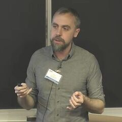

52 minLecture 1 | AI Safety, Ethics, & Society: Introduction and Overview of AI RisksDan HendrycksCourseBeginner~2024
52 minLecture 1 | AI Safety, Ethics, & Society: Introduction and Overview of AI RisksDan HendrycksCourseBeginner~2024Learn AI safety from the people doing it
AI Safety Researcher Library
844 full talks, lectures, podcasts and debates where 152 AI safety, alignment and AI control researchers explain their work in their own words. Organised by researcher, topic and learning path.
Start hereBrowse all videosMeet the researchers
- 152 researchers
- 844 videos
- 1,131 hours
- 2010–2026
What is AI safety?
The worry
AI systems are getting more capable fast. If a system much smarter than us ends up with goals that differ from ours, we may not be able to correct it. Many leading researchers think this is one of the most important problems of our time.
The work
Researchers try to make AI do what we intend (alignment), understand what happens inside models (interpretability), test them for dangerous behaviour (evals) and keep them safe to use even if they are flawed (AI control).
The rules
Others work on governance: how labs, governments and treaties could slow a dangerous race, track the chips used to train AI and set safety standards before it is too late.
Start here
See the whole path52 minLecture 1 | AI Safety, Ethics, & Society: Introduction and Overview of AI RisksDan HendrycksCourseBeginner~2024 20 minAI "Stop Button" Problem - ComputerphileRob MilesLectureBeginner~2017
20 minAI "Stop Button" Problem - ComputerphileRob MilesLectureBeginner~2017 45 minAI Ruined My YearRob MilesTalkBeginner~2024
45 minAI Ruined My YearRob MilesTalkBeginner~2024 37 minProvably Beneficial AI | Stuart RussellStuart RussellTalkBeginner~2019
37 minProvably Beneficial AI | Stuart RussellStuart RussellTalkBeginner~2019 1h 49m159 - We’re All Gonna Die with Eliezer YudkowskyEliezer YudkowskyPodcastBeginner~2023
1h 49m159 - We’re All Gonna Die with Eliezer YudkowskyEliezer YudkowskyPodcastBeginner~2023 1h 44mAI is a Ticking Time Bomb with Connor LeahyConnor LeahyPodcastBeginner~2023
1h 44mAI is a Ticking Time Bomb with Connor LeahyConnor LeahyPodcastBeginner~2023Featured researchers
All researchersGeoffrey HintonUniversity of TorontoPioneers · 15 videosYoshua BengioUniversité de Montréal; Mila; LawZeroPioneers · 14 videosStuart RussellUC Berkeley; Center for Human-Compatible AI (CHAI)Pioneers · 15 videosEliezer YudkowskyMachine Intelligence Research Institute (MIRI)Pioneers · 13 videos

Paul ChristianoAlignment Research CenterPioneers · 11 videosChris OlahAnthropicLab safety · 8 videosJan LeikeAnthropicLab safety · 9 videosHelen TonerGeorgetown CSETLab safety · 12 videosNeel NandaGoogle DeepMindLab safety · 16 videosBuck ShlegerisRedwood ResearchControl & evals · 11 videosAjeya CotraMETRPioneers · 9 videosRob MilesIndependent / Robert Miles AI SafetyTeaching · 14 videosLatest additions
Newest first 1h 10mThis Law Bans Superintelligent AIConnor LeahyPanelIntermediate30 Oct 2026
1h 10mThis Law Bans Superintelligent AIConnor LeahyPanelIntermediate30 Oct 2026 1h 27mEliezer Yudkowsky & Geoffrey Irving DebateEliezer Yudkowsky, Geoffrey IrvingDebateAdvanced29 Oct 2026
1h 27mEliezer Yudkowsky & Geoffrey Irving DebateEliezer Yudkowsky, Geoffrey IrvingDebateAdvanced29 Oct 2026 55 minClarifying exhaustive interpretability - Jacob HiltonJacob HiltonTalkAdvanced29 Oct 2026
55 minClarifying exhaustive interpretability - Jacob HiltonJacob HiltonTalkAdvanced29 Oct 2026 2h 36mThere’s still time to have an impact on AI safety | Luisa Rodriguez w/ Luke MuehlhauserLuke MuehlhauserPodcastIntermediate29 Oct 2026
2h 36mThere’s still time to have an impact on AI safety | Luisa Rodriguez w/ Luke MuehlhauserLuke MuehlhauserPodcastIntermediate29 Oct 2026 1h 27mMathematical Foundations of AI Alignment, Lecture 17 (Safe Delegated Approval to Misaligned Agents)Aaron RothLectureAdvanced29 Oct 2026
1h 27mMathematical Foundations of AI Alignment, Lecture 17 (Safe Delegated Approval to Misaligned Agents)Aaron RothLectureAdvanced29 Oct 2026 43 minGame Theory for AI Agents: What's Different About AIVincent ConitzerTalkIntermediate28 Oct 2026
43 minGame Theory for AI Agents: What's Different About AIVincent ConitzerTalkIntermediate28 Oct 2026 1h 27mNate Soares: "Stop the Race to Superintelligence"Nate SoaresTalkIntermediate27 Oct 2026
1h 27mNate Soares: "Stop the Race to Superintelligence"Nate SoaresTalkIntermediate27 Oct 2026 1h 24mAI Is SOLVING MATH Problems That Went Unsolved for CENTURIES| Scott AaronsonScott Aaronson, Roman YampolskiyPodcastIntermediate27 Oct 2026
1h 24mAI Is SOLVING MATH Problems That Went Unsolved for CENTURIES| Scott AaronsonScott Aaronson, Roman YampolskiyPodcastIntermediate27 Oct 2026Browse by topic
What do these mean?Alignment 110Interpretability 53AI control 24Evals 30Scheming 19Scalable oversight 16Existential risk 141Superintelligence 66AI governance 65Compute governance 10AGI timelines 30Deceptive alignment 6RLHF 13Corrigibility 7Reward hacking 6Chain of thought 6Sparse autoencoders 6Situational awareness 6Alignment faking 4Loss of control 11Intelligence explosion 11Debate 19Forecasting 31AI race 26
Browse by group
DirectoryPioneers & academics
The people who framed the problem: professors, founders of the field and leading critics.
29 people · 264 videosFrontier lab safety teams
Researchers and leaders working on safety inside the labs building frontier AI.
42 people · 198 videosControl & evals orgs
Independent groups that test models, study scheming and design AI control.
39 people · 220 videosPolicy & communicators
Policy experts, advocates, hosts and writers who explain AI risk to the world.
37 people · 188 videosTeaching & explainers
Teachers and explainers who make the field easy to start.
5 people · 43 videosWant the latest full episodes?
The separate AI Safety Full Episodes app collects recent full-length AI safety podcasts, debates and hearings in a cinema-style player.